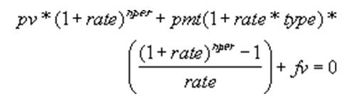

Is There Any Business Function to Return PV (Present Value) Like MS Excel Does?
Purpose of Document
Does JDE EnterpriseOne provide any Annuity functions similar to functions provided by Microsoft Excel Spreadsheet?
The expectation is,
PV(): Present Value of an Investment
FV(): Future Value of an Investment
PMT(): Periodic Payment for an Annuity
No. EnterpriseOne does not have any function which support this requirement but if it is required from your daily business you may write your own Named Event Rule (NER) based on the Microsoft MSDN library see http://msdn.microsoft.com/en-us/library/cc722983.aspx
The following is an example code which can guide you in writing event rules to obtain PV() value.
Note that this is just example of code and Oracle does not warranty any issue that may arise from this code.
Formula:

or pv = pmt/rate * [1 - 1 / (1 + i)^nper] (rate = rate per period. For example, annum rate is 8% then rate = 8 * (0.01) * 12 (month))
Result in Excel:
Example of implementation through Form Design Aid,
Possible code: For simplicity, code is written based on simple formula pv = pmt/rate * [1 - 1 / (1 + i)^nper]
======================================================================= FORM: Get Present Value ======================================================================= CONTROL: BUTTON Get PV EVENT: Button Clicked ----------------------------------------------------------------------- evt_x OPT: Using Defaults 0001 // 0002 VA frm_mnRate = ([FC _rate]*0.01)/12 /* monthly rate */ 0003 VA frm_nper = [FC _nper]*12 /* total number of month */ 0004 // 0005 VA evt_x = pow((1+[VA frm_mnRate]),[VA frm_nper]) 0006 // 0007 FC _pv = ([FC _pmt]/[VA frm_mnRate])*(1-(1/[VA evt_x])) 0008 FC _pv = [FC _pv]*-1 0009 //
Note:
For simple code, errors are not handled. In actual implementation, determine exception handling
Zero Division
The size of numeric value
(pow(1 + rate, -nper) will cause memory overflow because the limitation which you can define using existing DD items
In MS Excel, function can be called PV(rate, per, nper, pmt, fv)
Common formula is PV = - ( (pow(1 + rate, -nper)) * ( fv * rate - pmt + (power(1 + rate, nper)) * pmt )) / rate; (this code can't be used in JDE as pow(1+rate, nper*(-1)) is too small to hold the value using exiting dd item
Same manner, FV() and PMT can be implemented
Same code can be implemented through Named Event Rule (NER) for repeative usage